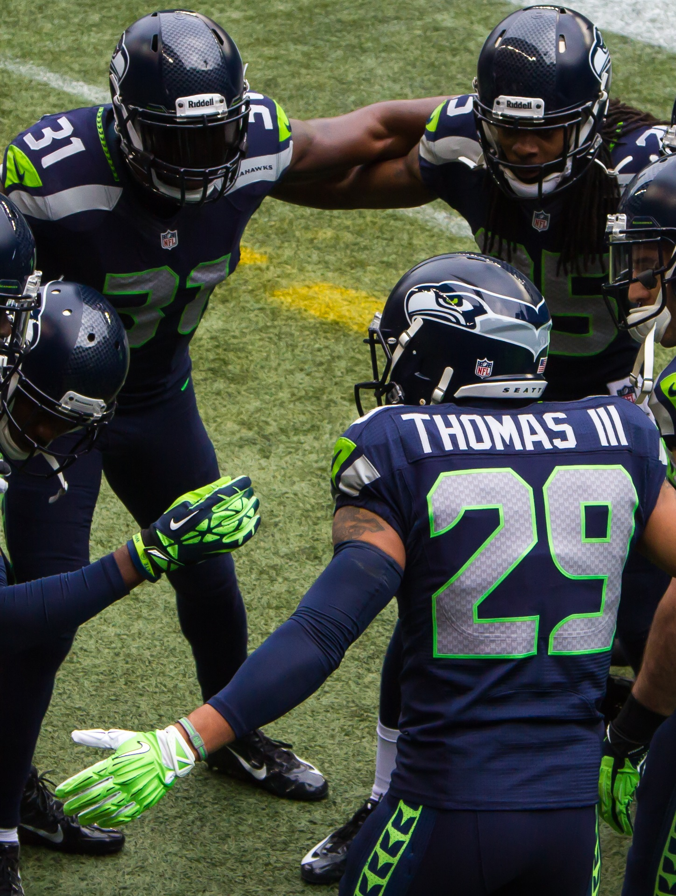
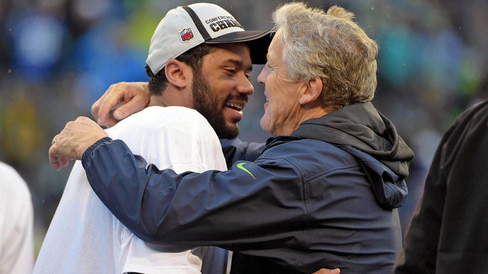

The Collapse of the Seattle Seahawks Dyansty
The complaints current and former players bandied about spoke to the way an era had ended this offseason, with the Seahawks removed from their once dynastic ambitions, restarting, trying to reclaim what had been lost. Seattle had ascended to the precipice of becoming the NFL’s latest dynasty, behind arguably one of the greatest defenses of all time and a quarterback who was young and sometimes great but also inconsistent. And it was an ethos that held them all together—the notion that ruthless, unsparing competition would prevail above all else.
The Reunion
Back in March, three weeks after the Seahawks released him and he signed with their division rival, All-Pro cornerback Richard Sherman married his longtime girlfriend Ashley Moss in the Dominican Republic. The soirée doubled as a reunion for the best defense in recent history, a unit that allowed the fewest points annually from 2012 to ’15, that won one Super Bowl and nearly won another, that gave the NFL the Legion of Boom.
The Seattle Seahawks Legion of Boom (Photo by Micheal Morris )
Sherman invited his closest friends and family to the Hard Rock Hotel and Casino in Punta Cana. The ceremony took place on the beach, the happy couple encased in a glass frame, the structure adorned with white roses. A turquoise ocean sparkled behind them. Waves lapped onto the beach.
Members of those mighty Seahawks defenses spent that weekend drinking and gambling and celebrating Sherman’s good fortune, which cut two ways. Because they weren’t simply toasting his nuptials in paradise; some were also saluting his escape to San Francisco, away from the Seattle organization a handful of players had referred to in private as “the Titanic” for the better part of a year. Even on the happiest weekend of Sherman’s life, inside his sprawling suite at the Hard Rock or at one of the resort’s blackjack tables, the conversations inevitably turned back in the same direction, to what one Seahawk describes as the “dynasty that never was” and some players’ lingering disdain for quarterback Russell Wilson.
The complaints current and former players bandied about spoke to the way an era had ended this offseason, with the Seahawks removed from their once dynastic ambitions, restarting, trying to reclaim what had been lost. Seattle had ascended to the precipice of becoming the NFL’s latest dynasty, behind arguably one of the greatest defenses of all time and a quarterback who was young and sometimes great but also inconsistent. And it was an ethos that held them all together—the notion that ruthless, unsparing competition would prevail above all else.
These wedding discussions usually started in a good place, with players reminiscing about the glory days, the way the Seahawks had battered Peyton Manning and the Broncos in Super Bowl XLVIII. “I was telling the guys I never thought of us as being that elite,” says Cliff Avril, a defensive end on those teams. “It was just a bunch of bad dudes having fun and playing for each other. I was like, we were pretty awesome.”
It's Over
All that was over now. The Seahawks had released Sherman, traded Pro Bowl defensive end Michael Bennett (and a seventh-round pick) for a fifth-rounder and an unknown receiver, and refused to meet safety Earl Thomas’s demands for a contract extension. Avril and hard-hitting safety Kam Chancellor were forced into retirement from spine and neck injuries. Cornerback DeShawn Shead and defensive tackle Sheldon Richardson departed in free agency. Corner Jeremy Lane was also released.
The final tally: six Pro Bowl-caliber players and eight contributors who departed, could not return or did not report to camp. (Thomas did report, on Wednesday of this week.) As a new season kicks off this Sunday when the Seahawks play the Broncos, only five players remain from their championship team—Wilson, Thomas, receiver Doug Baldwin, and linebackers Bobby Wagner and K.J. Wright. “I would never have thought this would unravel the way it has unraveled,” Avril says. “Pretty much everyone who left was a Pro Bowler, if you think about it.”
What kept coming back up at Sherman’s wedding wasn’t the massive overhaul the Seahawks had made. What kept coming back up was why. The less disgruntled members of the audience acknowledged that age and injuries played a role, that change in the NFL is inevitable, that teams, even great ones, eventually come undone in one way or another.
But a dozen sources with direct knowledge of the Seahawks’ internal dynamics who spoke to Sports Illustrated this summer also pointed to a locker room they contend had fractured last season, with private spats spilling into public view and a rift deepening between those who supported Wilson and those who felt the coaches held him to a different standard. The overhaul, those sources maintain, was a direct result of that dissension.
It was the management in Seattle deciding to “take the power back,” according to two departed Seahawks, with that notion confirmed by three other current or former players. If everything that happened after their loss to the Patriots in Super Bowl XLIX was done in attempt to rebuild faith and trust in one another, this summer marked a pivot toward something else. The Seahawks rebuilt around Wilson, their most prolific and polarizing remaining player, for at least the next two seasons, when he’s under contract—and they’re hoping to capture lightning with their roster, the way they did in 2012.
Pressure Mounting
Several current and former Seahawks say that coach Pete Carroll and general manager John Schneider can “feel the pressure mounting.” Rather than wait for further erosion, for the divide to deepen, for the defense to get older, they acted decisively this spring, after that defense fell from third in points allowed in 2016 to 13th (tied) last year. But those who left, and even some who remain, wonder if the changes ignore what they see as the more fundamental issue: that what made Seattle great—the highest of expectations, the unrelenting competition—is over, too.
“This is a crucial year, marking a new era of Seahawks football,” Baldwin says. “The jury is still out on what’s to come.”
The pick itself wasn’t as important as what happened afterward, when several players who spoke to SI said Carroll gathered his offensive and defensive leaders and told them they needed to protect Wilson, to treat him more gently than they would their other teammates. Those same players had been indoctrinated into the NFL the exact way they were trying to teach Wilson, with merciless competition as the way to bring out the best in each other, by never letting a lapse slide, by talking s--- after interceptions, even in practice. In the meeting, they told Carroll exactly that. “This is making him one of our own,” one player said, while several others nodded, according to two who were in the room. “He’s got to go through the process.”
Special treatment
No, Carroll told them. Not Wilson. “He protected him,” one Seahawk says. “And we hated that. Any time he f----- up, Pete would never say anything. Not in a team meeting, not publicly, never. If Russ had a terrible game, he would always talk about how resilient he was. We’re like, what the f--- are you talking about?”
-Tony McDaniel, former defensive tackle Seattle Seahawks
That Seahawk uses a pack of wolves as an analogy to explain his thinking. It’s as if Carroll sent his pack out to hunt but kept one wolf back, and that wolf still ate when the others returned with food. “We talked about that,” says Tony McDaniel, a defensive tackle with Seattle in 2013, ’14 and ’16. “Russell had his f----ups; he never got called out. If I was Pete Carroll, I’d tell Russell, I have to call you out in front of the team so there won’t be any problems.”
One former Seahawk says he and a handful of teammates speculated that Carroll judged Wilson too emotionally fragile to handle the criticism, be it from them or his coaches. That presented Carroll with a difficult choice: between the environment he’d fostered and the franchise quarterback he’d found in the third round. He chose the quarterback, the former player says—a choice many coaches would have made—adding “[Carroll] realized Russ couldn’t handle being part of the dynamic we had.”
Not every teammate felt that way. Some noted that it’s in Carroll’s nature to stress the positive, quarterback or not. But roughly half the locker room had issues, according to its inhabitants. Some complaints were pettier than others: that Wilson had his own space for treatment in the facility, which some thought was off-limits to his teammates and others insist was not; or that he didn’t interact with other players at the team’s annual Christmas party.
All these accusations, though, spoke to the same theme: that Wilson was both treated differently than his teammates and, in some instances, willingly stood apart from them. When McDaniel arrived in Seattle in ’13, he went to dinner with several defensive players and asked them why things seemed off between the defense and the quarterback. He was told by those players to be careful speaking frankly when Wilson was around, because they believed what they said could wind up on Carroll’s desk.
The players said that had already happened—subjects that had been discussed in the QB’s presence had come to the attention of Carroll, an assertion four other players who spoke to SI also made. “When guys would talk candidly in front of Russell, somehow all that stuff got up to Pete,” one player said. “And after a while, after a few instances, everyone started noticing that, and everyone made sure not to talk about anything that could be misconstrued near Russell.”
Some also dispute that Wilson puts in the work necessary to earn his status with the team and in NFL at large, believing he has prioritized his business interests over football. Others at Seahawks headquarters disavow that characterization. Their opposition speaks to the sort of polarizing presence Wilson had become in Renton.
(Asked to comment on all specific incidents in this story, Wilson declined through the team and his representatives. The Seahawks also declined to comment.)
The same players also cite much larger, more pertinent issues. Such as after the 2014 NFC Championship Game against the Packers, when Wilson was invited to the podium at the 50-yard-line after having thrown four interceptions in the game. The Seahawks had just pulled off a miracle comeback, with the defense limiting Aaron Rodgers to 178 passing yards and intercepting him twice. Multiple defensive players had gutted through injuries, and yet it was Wilson who received the most praise, and Wilson whom Carroll saluted in team meetings that next week as having saved the season.
“That’s when guys really started to notice the lack of accountability,” says one former player. “Before that, if guys made mistakes or we lost games, guys took responsibility for it, for good or for bad. We started losing that.”
The Interception
All of this came, remarkably, before the crushing Super Bowl defeat, before Wilson drove the Seahawks to the 1-yard-line in the game’s final minute against the Patriots, giving Seattle a chance to win. That Wilson threw an interception mattered less than the fact that the Seahawks had called a pass play on second down. Many who lamented how Wilson was treated differently now believed, truly believed, that Carroll had called a pass play to give Wilson a better chance to win the Super Bowl MVP award and decrease Marshawn Lynch’s chances, perhaps conveniently ignoring that offensive coordinator Darrell Bevell might have actually called the play.

Malcom Butler picks off a pass from Russell Wilson intended for Ricardo Lockette (Photo by Mark J. Rebilas-USA Today Sports)
Regardless, the players say, that call contradicted what Carroll always said publicly: that he wanted to run the ball and play great defense, that that’s how he built the Seahawks—to be tough and stop foes and let Lynch bulldoze Seattle to victory after victory. Again, several players felt that Carroll said one thing and did another, and this time it had cost them a repeat Super Bowl title. (Such a view disregards the fact that the Seahawks defense missed 18 tackles and allowed the Patriots 196 yards-after-catch in the game.)
“That’s when some guys started to openly question whether [Carroll] believed in his philosophy,” says Avril, who says he still trusted the coach at that point. “Guys started to be like, do you even believe what you’re saying?”
Some Seahawks still remember every detail from that night. Sherman pacing back and forth, wearing his frustration into the carpet in that locker room in Arizona. Lynch, fully dressed, downing a bottle of cognac, saying “These motherf------ robbed me,” and “f--- this,” over and over. “If we gave the ball to the soul of our team and we lose, f--- it, we lose,” one Seahawk says. “Point-blank, period. You lost doing what you do best. But he gave it to Russ. I didn’t believe the MVP thing at first. But now I wonder. It’s at least plausible.
“That one play changed the whole locker room,” McDaniel says. “When Pete would give a speech or try for a heart-to-heart, people just stopped responding. They didn’t know who to trust anymore.”
Breaking Apart
Rather than acknowledge the rift, though, these Seahawks say Carroll doubled down on Wilson in 2015. The quarterback took members of the offense and defense to Hawaii for a retreat before that season, to, according to sources, repair any lingering issues. But some lingered. “A lot of people felt like he was doing that to save face,” says one player who was there. “We were like, What is this? Why are we here? He was disingenuous."
It wasn’t just Seattle’s handling of Wilson that irked the locker room. The Seahawks had previously made difficult decisions around the likes of Bruce Irvin, Red Bryant, Brandon Mebane and Malcolm Smith, among other key contributors. Many of those moves were accepted as part of routine NFL business—the team did have to pay Sherman, Thomas, Baldwin, Wilson and many others, after all —but over time, after the Seahawks released or dealt several of their top leaders, the sense that competition would prevail over all else began to fade. What had felt so unique to Seattle for players who had spent time elsewhere—a true sense of meritocracy, absent favoritism for high-priced free agents or high draft picks—was eroding.
An early move that bothered some was the release of McDaniel, a favorite of the defensive vets, after the 2014 season. “Tony did all this dirty work,” says one former Seahawks defensive starter. “I don’t think people on the outside really recognized how valuable he was. Nobody in that locker room understood why we cut him.”
McDaniel was eventually brought back, in 2016, finding himself in a time-share with other players whom he argues he was outperforming. “I was one of the guys who came in, put my hat on and went to work. Didn’t complain, didn’t say much,” he says. “The eye in the sky don’t lie. They started letting guys in front of me who I knew clearly weren’t better than me play. It frustrated me that they were favoring guys they drafted. I came off an eight-tackle game and they would bench me.”
Players who spoke to Sports Illustrated said the preference for younger, underperforming players over quality veterans was most apparent in the career arc of one lineman: Germain Ifedi, the Texas A&M offensive tackle whom Schneider and Carroll drafted 31st overall in 2016. The opportunities Ifedi has enjoyed while consistently grading out poorly have irked veterans who wonder why the Seahawks won’t bring in free-agent competition or promote other players to challenge him.
Retaining wide receiver Tanner McEvoy at the expense of Kasen Williams in 2017 angered the defensive backs and some receivers who were intimately familiar with the abilities of both. Three leaders even went to Seahawks management in protest. “Like, what the f--- are y’all doing?” says one. “Because you’re not building a winning team when you’re making those decisions.” (The Seahawks cut McEvoy this summer; he signed with the Dolphins. Williams is currently a free agent.)
It’s not unusual, of course, for players to take issue when their favorite teammates are released. It’s possible, too, that Carroll figured Wilson would be at his best when protected, that he needed more protection than the brash members of his defense, who could reasonably be expected to perform no matter what. Also possible: that Seattle looked at its roster, saw an aging defense, and decided to build around a young, in-his-prime QB. But even then, that’s not how the moves went over to those critical of Wilson in the locker room. Stitched together, they became something else, something bigger: a broken system.
“Everything they preached about competition stopped being true,” says one former Seahawk. “It wasn’t like that anymore. The Kasen Williams move was one. The way they treated the running back situation for years, the offensive line. They would draft offensive lineman high and tell them, You’re a leader now. No, you earn that. It all became artificial.”
Those decisions, on top of Carroll’s refusal to publicly check Wilson in any setting, public or private, chipped away at the coach’s once-renowned ability to motivate a wide range of personalities, according to the players who spoke to SI. Carroll’s mantras, which consistently buttressed his motivational talks—“Always Compete,” “Practice is Everything”—began to ring hollow.
Players who lamented the shift focused on Wilson, which other Seahawks believed was unfounded and unfair. Did Thomas still have to earn his spot? they ask. Did Sherman? The week following a December 2016 loss to the Packers, Sherman and Bennett nearly came to blows over Wilson. The quarterback threw five interceptions against a defense that finished 31st in passing yards allowed that season, and Sherman, a member of the unofficial player leadership huddle of which Wilson was not a part, proposed confronting Wilson in a private setting to ask what the issue was, as they'd routinely do with other players when performance dipped.
“That was a common thing to do, because often it was some outside factor affecting guys, family stuff, and you’d work through that,” one former player says. But Bennett took issue, reminding Sherman that they only had one quarterback. The confrontation escalated to the point where the two needed to be separated. Toward the end of that ’16 season, Sherman’s complaints became louder and more public, and they clearly dated back to what had happened in the Super Bowl defeat. In private, what he said was even worse
The notion that quarterbacks will be treated differently, even should be, is not new. But Aaron Rodgers goes out of his way to include teammates in promotional spots, and Bill Belichick regularly shoots verbal barbs at Tom Brady during film sessions. Incidentally, neither of those teams fielded defenses with as many stars as the Seahawks once boasted, and that’s why the dynamic in Seattle was different than in New England or Green Bay. “You’re not going to talk crazy to Tom Brady at practice,” Avril says. “You’re not going to talk crazy to Aaron Rodgers at practice. You might get kicked out of practice if you do that. To me it’s absurd to think a quarterback will be treated the same all the time. There’s a hierarchy in every thing. So why wouldn’t they expect the same for this guy?
- Cliff Avril- Seahawks Defensive End
“The problem is,” Avril continues, “at one point we were allowed, people were allowed to talk trash to him.” Then, after 2014, they weren’t.
For years, Avril says, he warned his teammates, friends and acquaintances alike. All the public and private complaints, the sideline antics, the defensive players calling out the offensive coordinator—the personalities that Carroll sometimes referred to as the Seahawks’ “celebration of uniqueness”—all that would only be tolerated to a point.
“When you start losing, people feel like they’re losing control of the team,” Avril says. “Or they feel like they’re losing control of people on the team. You get away with that when you’re winning.” If not, change. Hence the 2018 offseason.
End of Era
Of course, the Seahawks dropped five of their last nine games in 2017, as the young Rams ascended to the top of an NFC West division that had long been controlled by Seattle and its mighty defense. Players who had grown accustomed to the old way admittedly started to check out. Bennett took to reading books in some team meetings. Sherman’s sideline exclamations became increasingly animated. “Too many people with opinions,” says one former defensive starter. That’s when some players took to referring to the Seahawks as the Titanic. Then, as predicted, ship hit iceberg.
Sherman strained his Achilles in practice before a Thursday night game in November against Arizona, then tore it in the third quarter while accelerating out of a break. That night would mark both Sherman’s and Chancellor’s last game in a Seahawks uniform; for Chancellor, his last in any uniform. That the injuries happened on the same field where the Seahawks had lost to the Patriots in the Super Bowl was not lost on some players; not only had a potential dynasty died on a football field in Glendale, Ariz., now the Legion of Boom had, too. “I just remember feeling so demoralized, like f---,” one Seahawk says.
Seahawks CB Richard Sherman lays on the field after he ruptured his achillies against Arizona ( Photo by Christian Petersen/Getty Images)
On that night in Arizona, an era ended. “It was like, it’s over,” that Seahawk says. Change came, as predicted. After the Sherman injury, veteran players even began preparing for their exits. Bennett repeatedly told his best friend, Avril, that he expected to be traded or released. In December, during what he thought was a private moment with Cowboys coach Jason Garrett after a game against Dallas, Thomas was caught on camera telling the coach, “If y’all got the chance to come get me, come get me.”
Wilson Playing Well
To his credit, Wilson played well down the stretch, without much help from his offensive line. His 34 touchdown passes matched his career high from 2015, and he threw for 3,983 yards and ran for 575 more, the second-highest total of his career. In his first six seasons, he’d thrown for more touchdowns (161) than Matt Ryan (153) or Cam Newton (136) had in that same timeframe. As teammates complained, Wilson received MVP consideration. They’d argue that they weren’t complaining about Wilson’s statistics or production, but rather how Carroll handled him and how that changed the locker room dynamic, making the Seahawks less competitive and leading several prominent players to question their head coach. “All good things come to an end,” Bennett told Avril more than once last fall.
He was right. The season finished, and the playoffs started without the Seahawks for the first time since the 2011 season. Carroll fired his offensive coordinator, longtime fan non-favorite Bevell, and his defensive coordinator, Legion of Boom favorite Kris Richard, along with several other coaches. Many in the locker room wondered if Brian Schottenheimer had been named offensive coordinator specifically to better align Wilson with his teammates. Then, the purge. One Seahawk felt it necessary to tell Duane Brown, the left tackle Seattle traded for last season and signed to an extension this spring, “It’s not usually like this.”
Recapture The Magic
Ultimately, the Seahawks made the same bet as Carroll. They bet on Wilson, at least for the next two years, when he’s under contract, then built around him, hoping to gain by what they subtracted from their locker room, to get younger, more cohesive, to recapture the magic they found in 2012. Some of Wilson’s greatest critics, and even some of his defenders, are gone now, and these Seahawks are clearly his team moving forward.
Remaining Seahawks argue that keeping the core of the defense intact this season would have been impossible, regardless, with Bennett turning 32 and Sherman turning 30 and Avril and Chancellor forced into retirement. All players think they can play five years longer than they actually can, they argue, citing the longer prime that Wilson has left. But that doesn’t make the end of an era any less sudden—or lessen the pain of what could have been.
“Hell, no,” Wright says, when asked if he expected the defense would be dismantled as quickly as it came apart. “I thought we were going to ride off into the sunset together. I definitely didn’t see it falling apart that fast. I thought it would last another three or four years.”
Publicly, the principals remaining in Seattle—Schneider, Carroll and Wilson—have maintained that there’s been no shift in philosophy, no effort to empower and insulate the quarterback, and that their current roster is a group on the rise, much like the 2012 Seahawks. Asked by SI in general terms about the upcoming season and all the turnover back in August, all sounded optimistic. The expectation for excellence, Wilson said then, hasn’t waned as the veterans who helped establish it have departed. “The standard was set a long time ago,” Wilson told SI, “and it’s still there from Day 1 when we started practicing this year. The standard is super high. The standard is to practice at the highest level, and do everything we can to win.”
Asked in training camp whether 2018 feels different at team headquarters, Wilson said then that not much had changed. “There are definitely some different faces out there, but it really doesn’t [feel different]. Coach Carroll does a tremendous job of being consistent every day. He does a tremendous job of making sure the culture is the way that we want it to be—a culture of excellence, a culture of love, a culture of guys who love the game.”
Carroll told SI as part of those earlier August interviews he believes the Seahawks can build a champion with the guys in the locker room right now, and that some are destined to become household names, and that Wilson is “the best he’s ever been,” on and off the field. “Nobody knew who Richard was or who Kam was back in the day,” Carroll said then, “and there are guys in that room right now that they’re going to know about in time. It’s thrilling. … We’ve got extraordinary performance and leadership ability from the QB spot. I don’t know what [the critics] are thinking.”
Russell Wilson hugs Pete Carroll (Photo by Kirby Lee USA Today Sports)
“It’s a dope opportunity, in my opinion,” Wagner said then, echoing his coach.
Looking For Answers
The answers will come in 2018. Winning, as Avril says, masks deficiencies in the process. If Carroll deliberately shifted the power from a locker room full of outspoken Pro Bowlers to the talented passer who didn’t have the full respect of that locker room—as many current and former players believe he has done—the one and only thing that will justify that transition is to win. “Now you’re tied to him,” one Seahawk told management this spring.
Just four years removed from reaching the pinnacle of the sport, this the state of Seattle’s NFL team, on the verge of another season. Blame the salary cap. Blame ego. Blame age and injury. Blame success. Just know that many of the principals, especially those who remain, don’t think this version of the Titanic is foundering just yet.
“Wait and see,” the ever-optimistic Carroll told SI. “I ain’t worried one bit.”
With reporting from Albert Breer.
Question or comment? Email us at talkback@themmqb.com.